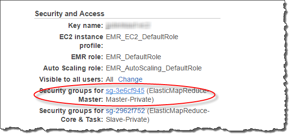

Le traduzioni sono generate tramite traduzione automatica. In caso di conflitto tra il contenuto di una traduzione e la versione originale in Inglese, quest'ultima prevarrà.
Creazione di schemi esterni per Amazon Redshift Spectrum
Tutte le tabelle esterne devono essere create in uno schema esterno, che crei utilizzando un'istruzione CREATE EXTERNAL SCHEMA.
Nota
Alcune applicazioni utilizzano i termini database e schema in modo interscambiabile. In Amazon Redshift viene utilizzato il termine schema.
Uno schema esterno Amazon Redshift fa riferimento a un database esterno in un catalogo dati esterno. È possibile creare un database esterno in Amazon Redshift, in Amazon Athena, in AWS Glue Data Catalog o in un metastore Apache Hive, come Amazon EMR. Se si crea un database esterno in Amazon Redshift, il database si trova nel catalogo dati di Athena. Per creare un database in un metastore Hive, devi crearlo nell'applicazione Hive.
Amazon Redshift deve essere autorizzato ad accedere al catalogo di dati in Athena e ai file di dati in Amazon S3 per tuo conto. Per fornire tale autorizzazione, devi creare dapprima un ruolo AWS Identity and Access Management (IAM). Successivamente, si collega il ruolo al cluster e si fornisce l'Amazon Resource Name (ARN) per il ruolo nell'istruzione CREATE EXTERNAL SCHEMA di Amazon Redshift. Per ulteriori informazioni sull'autorizzazione , consultare Policy IAM per Amazon Redshift Spectrum.
Nota
Se attualmente si dispone di tabelle esterne Redshift Spectrum nel catalogo dati di Athena, è possibile migrare tale catalogo Athena a un catalogo dati AWS Glue. Per utilizzare un catalogo dati AWS Glue con Redshift Spectrum, potresti dover modificare le policy IAM. Per ulteriori informazioni, consultare Aggiornamento al catalogo di dati AWS Glue Glue nella Guida per l'utente di Amazon Athena.
Per creare un database esterno nello stesso tempo, devi creare uno schema esterno, specificare FROM DATA CATALOG e includere la clausola CREATE EXTERNAL DATABASE nell'istruzione CREATE EXTERNAL SCHEMA.
L'esempio seguente crea uno schema esterno denominato spectrum_schema utilizzando il database esterno spectrum_db.
create external schema spectrum_schema from data catalog database 'spectrum_db' iam_role 'arn:aws:iam::123456789012:role/MySpectrumRole' create external database if not exists;
Se il catalogo dati viene gestito mediante Athena, specificare il nome di database Athena e la regione AWSin cui si trova il catalogo dati Athena.
Nell'esempio seguente viene creato uno schema esterno che utilizza il database sampledb di default nel catalogo dati di Athena.
create external schema athena_schema from data catalog database 'sampledb' iam_role 'arn:aws:iam::123456789012:role/MySpectrumRole' region 'us-east-2';
Nota
Il parametro region fa riferimento alla regione AWS in cui si trova il catalogo dati Athena e non alla posizione dei file di dati in Amazon S3.
Se il catalogo di dati viene gestito mediante un metastore Hive, come Amazon EMR, i gruppi di sicurezza devono essere configurati per consentire il traffico tra i cluster.
Nell'istruzione CREATE EXTERNAL SCHEMA, specifica FROM HIVE METASTORE e includi l'URI e il numero di porta del metastore. L'esempio seguente crea uno schema esterno che utilizza un database metastore Hive denominato hive_db.
create external schema hive_schema from hive metastore database 'hive_db' uri '172.10.10.10' port 99 iam_role 'arn:aws:iam::123456789012:role/MySpectrumRole'
Per visualizzare gli schemi esterni per il cluster, eseguire una query sulla tabella di catalogo PG_EXTERNAL_SCHEMA o sulla vista SVV_EXTERNAL_SCHEMAS. L'esempio seguente esegue una query su SVV_EXTERNAL_SCHEMAS, che unisce in join PG_EXTERNAL_SCHEMA e PG_NAMESPACE.
select * from svv_external_schemas
Per la sintassi completa del comando e alcuni esempi, consultare CREATE EXTERNAL SCHEMA.
Utilizzo di cataloghi esterni in Amazon Redshift Spectrum
I metadati per i database esterni e le tabelle esterne di Amazon Redshift Spectrum sono archiviati in un catalogo dati esterno. Per impostazione predefinita, i metadati di Redshift Spectrum sono archiviati nel catalogo dati di Athena. È possibile visualizzare e gestire i database e le tabelle di Redshift Spectrum nella console Athena.
È inoltre possibile creare e gestire i database esterni e le tabelle esterne utilizzando il linguaggio DDL (Data Definition Language) Hive con Athena o un metastore Hive come Amazon EMR.
Nota
Consigliamo di utilizzare Amazon Redshift per creare e gestire i database esterni e le tabelle esterne in Redshift Spectrum.
Visualizzazione dei database Redshift Spectrum in Athena e AWS Glue
È possibile creare un database esterno includendo la clausola CREATE EXTERNAL DATABASE IF NOT EXISTS nell'istruzione CREATE EXTERNAL SCHEMA. In questi casi, i metadati del database esterno sono archiviati nel catalogo dati. I metadati per le tabelle esterne che crei qualificati dallo schema esterno sono archiviati anche nel tuo catalogo dati .
Athena e AWS Glue gestiscono un catalogo dati per ogni regione Regione AWS supportata. Per visualizzare i metadati delle tabelle, devi accedere alla console di Athena o AWS Glue. In Athena, scegli Origini dati, AWS Glue, quindi visualizza i dettagli del database. In AWS Glue, scegli Database, il database esterno e quindi visualizza i dettagli del database.
Se le tabelle esterne vengono create e gestite mediante Athena, registrare il database utilizzando CREATE EXTERNAL SCHEMA. Ad esempio, il comando seguente registra il database Athena denominato sampledb.
create external schema athena_sample from data catalog database 'sampledb' iam_role 'arn:aws:iam::123456789012:role/mySpectrumRole' region 'us-east-1';
Quando si esegue una query sulla vista di sistema SVV_EXTERNAL_TABLES, vengono visualizzate le le tabelle nel database sampledb Athena e le tabelle create in Amazon Redshift.
select * from svv_external_tables;
schemaname | tablename | location --------------+------------------+-------------------------------------------------------- athena_sample | elb_logs | s3://athena-examples/elb/plaintext athena_sample | lineitem_1t_csv | s3://myspectrum/tpch/1000/lineitem_csv athena_sample | lineitem_1t_part | s3://myspectrum/tpch/1000/lineitem_partition spectrum | sales | s3://redshift-downloads/tickit/spectrum/sales spectrum | sales_part | s3://redshift-downloads/tickit/spectrum/sales_part
Registrazione di un database di un metastore Apache Hive
Se crei delle tabelle esterne in un metastore Apache Hive, puoi utilizzare CREATE EXTERNAL SCHEMA per registrare tali tabelle in Redshift Spectrum.
Nell'istruzione CREATE EXTERNAL SCHEMA, specifica la clausola FROM HIVE METASTORE e fornisci l'URI e il numero di porta del metastore Hive. Il ruolo IAM deve includere l'autorizzazione per accedere ad Amazon S3 ma nessuna autorizzazione Athena. L'esempio seguente registra un metastore Hive.
create external schema if not exists hive_schema from hive metastore database 'hive_database' uri 'ip-10-0-111-111.us-west-2.compute.internal' port 9083 iam_role 'arn:aws:iam::123456789012:role/mySpectrumRole';
Abilitazione del cluster Amazon Redshift per accedere al cluster Amazon EMR
Se il metastore Hive è in Amazon EMR, è necessario fornire al cluster Amazon Redshift l'accesso al cluster Amazon EMR. Per farlo, è necessario creare un gruppo di sicurezza Amazon EC2. Quindi si consente tutto il traffico in entrata verso il gruppo di sicurezza EC2 dal gruppo di sicurezza del cluster Amazon Redshift e dal gruppo di sicurezza del cluster Amazon EMR. Quindi viene aggiunta la sicurezza EC2 al cluster Amazon Redshift e al cluster Amazon EMR.
Visualizzare il nome del gruppo di sicurezza del cluster Amazon Redshift
Per visualizzare il gruppo di sicurezza, procedere come segue:
-
Accedere alla AWS Management Console e aprire la console Amazon Redshift all'indirizzo https://console.aws.amazon.com/redshift/
. -
Dal menu di navigazione scegliere Clusters (Cluster), quindi scegliere dall'elenco il cluster per visualizzarne i dettagli.
-
Scegliere Properties (Proprietà) e visualizzare la sezione Network and security settings (Impostazioni rete e sicurezza).
-
Trova il gruppo di sicurezza in Gruppo di sicurezza VPC e prendi nota.
Visualizzare il nome del gruppo di sicurezza dei nodi master di Amazon EMR
Aprire il cluster Amazon EMR. Per ulteriori informazioni, consulta Utilizzo delle configurazioni di sicurezza per impostare la sicurezza del cluster nella Guida alla gestione di Amazon EMR.
In Sicurezza e accesso, prendere nota del nome del gruppo di sicurezza del nodo principale Amazon EMR.

Per creare o modificare un gruppo di sicurezza Amazon EC2 per consentire la connessione tra Amazon Redshift ed Amazon EMR
Nel pannello di controllo di Amazon EC2, scegliere Gruppi di sicurezza. Per ulteriori informazioni, consultare Regole del gruppo di sicurezza nella Guida per l'utente per le istanze Linux di Amazon EC2
Scegliere Create Security Group (Crea gruppo di sicurezza).
Se si sta utilizzando VPC, scegliere quello in cui si trovano i cluster Amazon Redshift ed Amazon EMR.
Aggiungere una regola in entrata.
Per Type (Tipo), scegliere Custom TCP (TCP personalizzato).
In Source (Origine), scegliere Custom (Personalizzata).
Digitare il nome del gruppo di sicurezza Amazon Redshift.
Aggiungere un'altra regola in entrata.
Per Type (Tipo), scegliere TCP.
Alla voce Port Range (Intervallo porte), inserire 9083.
Nota
La porta predefinita per un HMS EMR è 9083. Se HMS utilizza una porta differente, specificare la porta nella regola in entrata e nella definizione dello schema esterno.
In Source (Origine), scegliere Custom (Personalizzata).
Inserire un nome e una descrizione del gruppo di sicurezza.
Scegliere Create Security Group (Crea gruppo di sicurezza).
Per aggiungere il gruppo di sicurezza Amazon EC2 creato nella procedura precedente al cluster Amazon Redshift
Nella console Amazon Redshift, scegliere il cluster.
Scegli Properties (Proprietà).
Visualizzare Impostazioni di rete e sicurezza e scegliere Modificare.
Nello stato Gruppo di sicurezza VPC, scegliere il nome del nuovo gruppo di sicurezza.
Seleziona Salvataggio delle modifiche.
Per aggiungere il gruppo di sicurezza Amazon EC2 al cluster Amazon EMR
In Amazon EMR, scegliere il cluster. Per ulteriori informazioni, consulta Utilizzo configurazioni sicurezza per impostare la sicurezza del cluster nella Guida alla gestione di Amazon EMR.
In Hardware, scegliere il collegamento per il nodo master.
Scegliere il collegamento nella colonna EC2 instance ID (ID istanza EC2).

Per Azioni, scegliere Sicurezza, Modifica gruppi di sicurezza.
Nello statoGruppi di sicurezza associati, scegliere il nuovo gruppo di sicurezza e scegliere Aggiungi gruppo di sicurezza.
Selezionare Salva.